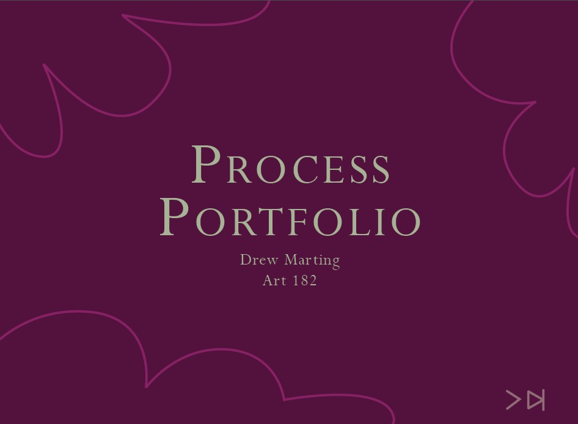

Portfolio
Drew's Website
A website built from HTML and CSS as an introductory course to the languages. Building was focused on the basics of HTML and CSS to build a functional and simplistic website.
Check it out!
Introductory Digital Art Portfolio
An interactive PDF built with Adobe InDesign featuring my introductory Digital Art coursework. Of four projects total across the quarter, three are detailed, providing relevant exercises, lectures, and process regarding their completion. The PDF is available upon request.